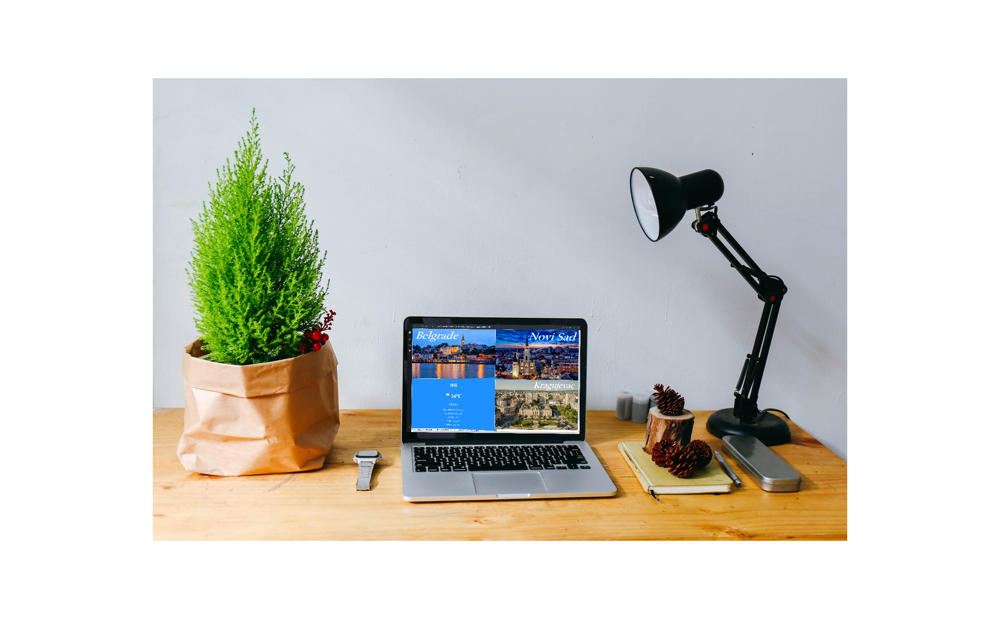
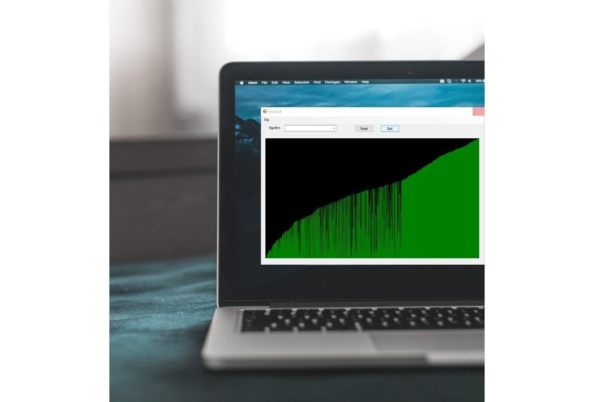
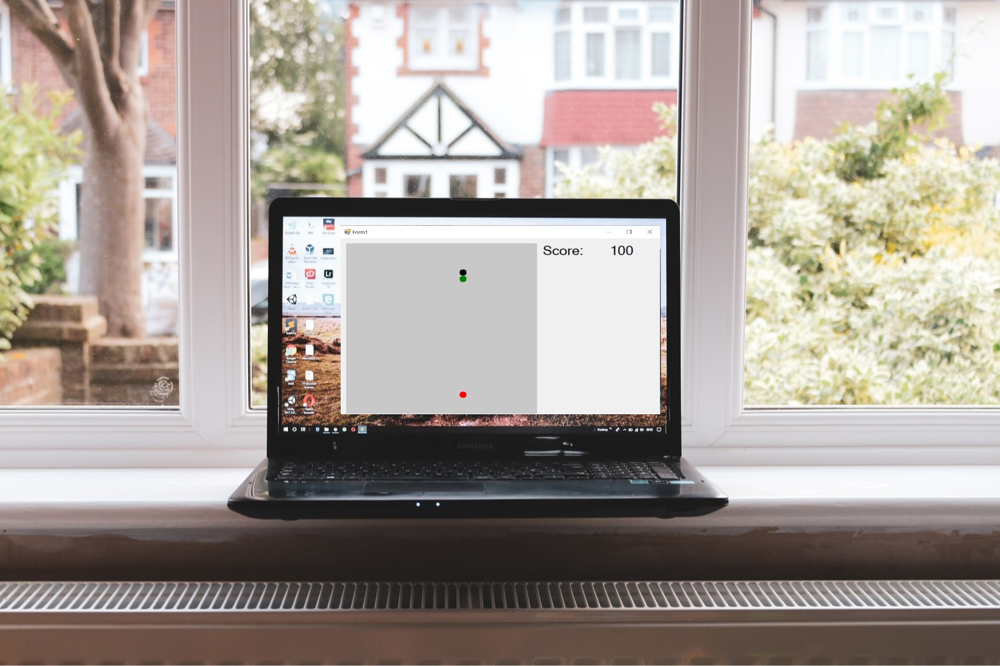
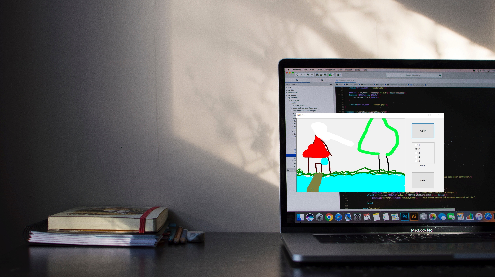
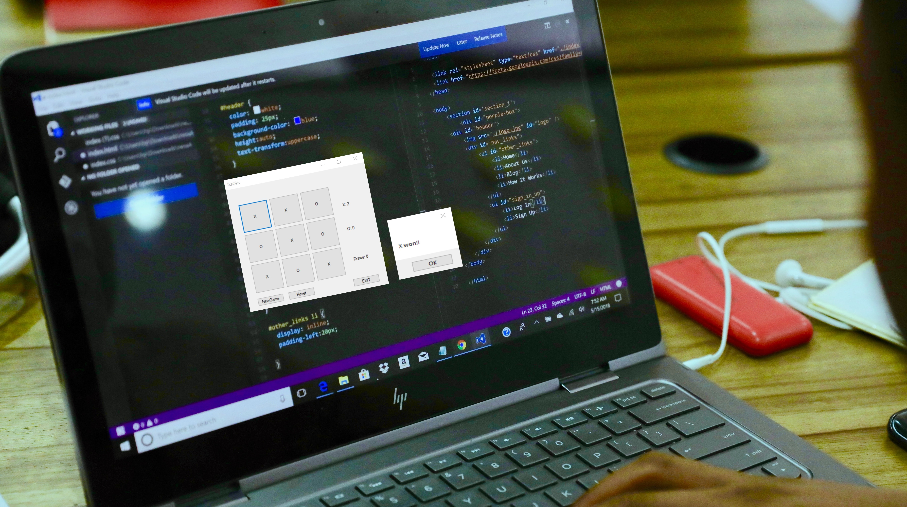

I'm a passionate developer from Serbia, and my objective is to obtain an entry-level position as a Software Engineer with,
allowing me to utilize my education while gaining valuable work experience in a team-oriented environment.
Always willing to learn new technologies. Check some of my Projects below.
The web application that allows user to register/login and order food online. It contains 4 groups of food, each group has a dozen meals. The first user needs to decide which meal wants to order, and then add that meal to the cart, after adding a meal to the cart, the user can decide if he wants something else, or purchase selected meals. The last step is to complete the information field (name, surname, address where to deliver food...)

The website that shows current weather in 4 cities in Serbia. I've used a public API for this project from openweathermap, JavaScript, HTML, and CSS

Sorting Visualizer is a desktop application made in C# forms, currently have only bubble sorting algorithm, I will add more sorting algorithms in future

A game made in C# forms, the objective is to collect red balls and dodge the walls
Made in C# Visual connected to a database created in Microsoft SQL Server. Application has two
options, first one is for searching users information in the database,
by entering the Last Name of the user and clicking the Search button, in the textbox below
the output will be printed (FirstName, Address, Email, and Phone Number) if the entered the Last Name exists in the database.
The second option is for inserting new
users into a database by simply filling the information fields, and clicking the button insert.

Simple drawing application made for quick scratching in C# Visual. App has 2 buttons
(one for changing the color of the pen, and second for clearing worksheet window),
and one radio button select menu (for selecting the size of the pen width).

TicTacToe classic game made in C# Visual, it has 9 clickable buttons
(changing turns for opponents), 3 labels (2 of them are for showing the score of each player, and one for showing number of drawn matches)
and 3 more functional buttons (one is for starting a new game, second is for resetting all score labels, and third is for closing the game).
The game made in Unity3D using C#, the player is the Ball whose objective is to dodge obstacles on the road while collecting coins using arrow keys to control the movement of the Ball. To beat the game player needs to collect every coin on the track, and dodge every obstacle if a player hits an obstacle it automatically restarts the game and returns the player to the start of the track. In the left upper corner is the counter of currently collected coins.